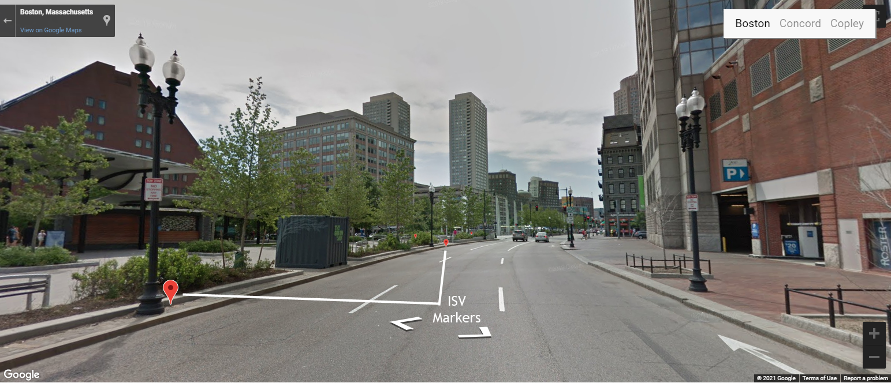
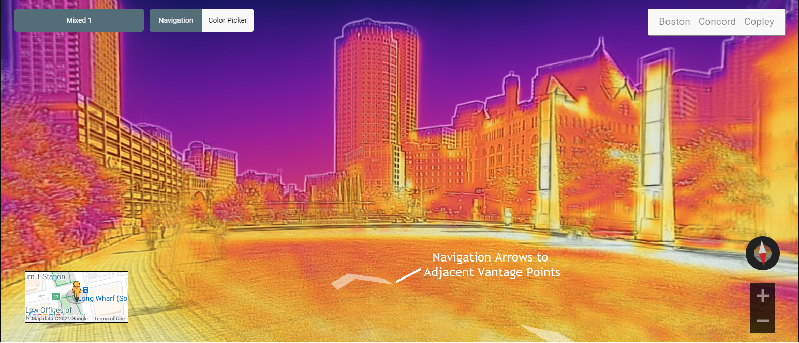
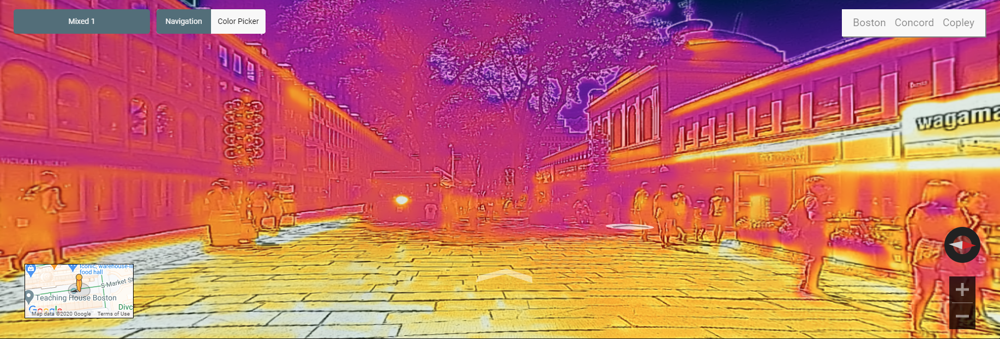
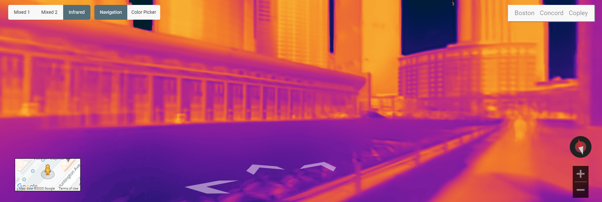
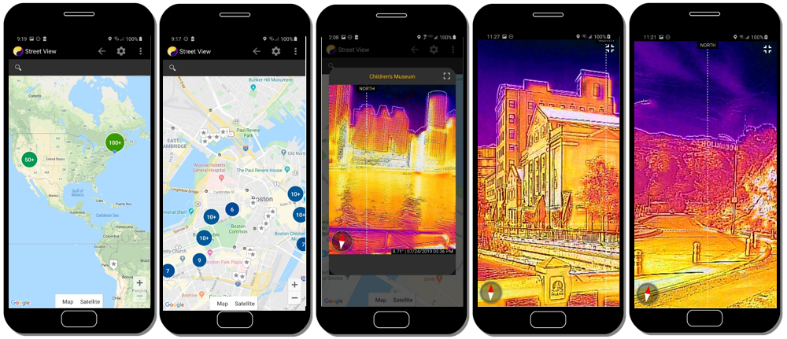
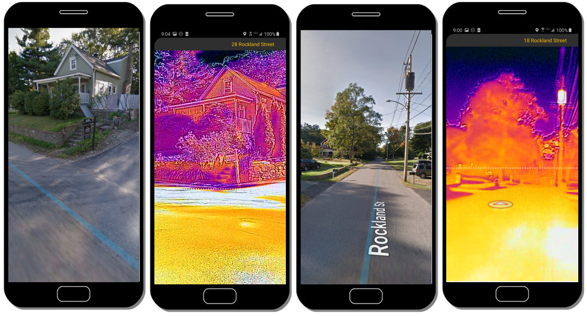

Infrared Street View: A Large-Scale Survey of the Thermal Envelopes of Our Dwellings through Citizen Science
IFI is developing technologies to support a citizen science program to crowdsource a thermal equivalent of Google's Street View. Instead of showing the streets in visible light, the Infrared Street View shows them in thermal infrared light, creating pictures of the energy landscapes of our neighborhoods, towns, and cities. The project aims to promote people's awareness of energy usage and efficiency in the wake of climate change.
Web-based version
The Web-based version allows users to explore the Infrared Street View from any browser.
Markers of infrared vantage points in Google Maps

Markers of infrared vantage points in Google Street View

Navigation arrows to adjacent vantage points in Infrared Street View

Quincy Market in Boston

Reflecting Pool at the Christian Science Plaza in Boston
Smartphone-based version
The smartphone version of the Infrared Street View version is implemented in a different way:

The Android version of the Infrared Street View
The following images compare the Google Street View and the Infrared Street View on the phone:

Comparing Google Street View and Infrared Street View
Infrared Street View
Infrared Panorama Samples
Boston Infrared Panorama
Remote Thermography
Hunt Energy Leaks
Urban Heat Islands
This project is supported by the National Science Foundation (NSF) under grant number #2054079. Any opinions, findings, and conclusions or recommendations expressed in this material, however, are those of the authors and do not necessarily reflect the views of NSF.